Electric Vehicle Dynamics Simulation Framework¶
Author: Mario Tilocca
Purpose: High-fidelity vehicle dynamics simulation for Electric Autonomous Vehicles with real-time telemetry
Overview¶
This repository implements a comprehensive Software-in-the-Loop (SIL) simulation framework for electric vehicle dynamics, designed to support autonomous vehicle development. The system features deterministic physics models, realistic sensor simulation with validated noise characteristics, industry-standard CAN bus integration, and real-time InfluxDB telemetry for live monitoring and analysis.
Key Capabilities¶
- ✅ 3-DOF vehicle dynamics — full rigid-body integration of longitudinal (vx), lateral (vy), and yaw (ψ) motion with centripetal coupling terms
- ✅ Hybrid kinematic/dynamic blend — pure kinematic below ~1 m/s, smooth transition to full dynamic model at ~4 m/s
- ✅ Dugoff tire model — physics-based Fx/Fy from combined slip with friction circle saturation and first-order lag (τ = 0.3 s)
- ✅ Per-wheel rotational dynamics — individual wheel ODE (Iw·ω̇ = τ_drive − τ_brake − Fx·R)
- ✅ Load transfer — longitudinal and lateral weight redistribution on all four wheels
- ✅ Gear selector via CAN — Forward / Neutral / Reverse with explicit tire force direction control
- ✅ Closed-loop control — bang-bang speed controller with schedule-driven steering, fully CAN-connected
- ✅ 5 sensor types with realistic noise models (Battery, Wheel Speed, IMU, GNSS, Radar)
- ✅ CAN bus integration broadcasting 7+ frames at 10–100 Hz update rates
- ✅ Real-time InfluxDB telemetry — time-series data logging with wall-clock timestamps
- ✅ Visitor pattern architecture enabling scalable subsystem development
- ✅ ML-ready sensor data — 93-column CSV with ground truth + measurements + full tire state
Target Applications¶
- Sensor Fusion Algorithm Development — IMU + GNSS data for Extended Kalman Filter (EKF)
- Control System Validation — closed-loop testing including cusp maneuvers and reverse operations
- Traction Control Development — Dugoff tire model for TCS/ABS algorithm testing with real slip data
- Hardware-in-the-Loop (HIL) preparation — CAN-based actuator/sensor interfaces
- Real-time Fleet Monitoring — InfluxDB + Grafana dashboards for live telemetry
System Architecture¶
High-Level Data Flow¶
flowchart TB
subgraph Input["Input Layer"]
JSON[JSON Scenario]
CANRX[CAN RX Commands]
YAML[Vehicle Config YAML]
end
subgraph Core["Simulation Core"]
LUA[Lua Runtime]
PLANT[Plant Model]
SENSORS[Sensor Bank]
end
subgraph Output["Output Layer"]
CANTX[CAN TX Frames]
CSV[CSV Data Log]
INFLUX[InfluxDB Time-Series]
GRAFANA[Grafana Dashboards]
end
JSON --> LUA
YAML --> PLANT
CANRX -.-> PLANT
LUA --> PLANT
PLANT --> SENSORS
SENSORS --> CANTX
SENSORS --> CSV
SENSORS --> INFLUX
INFLUX --> GRAFANA
style PLANT fill:#4CAF50
style SENSORS fill:#2196F3
style CANTX fill:#FF9800
style INFLUX fill:#9C27B0
style GRAFANA fill:#E91E63Subsystem Architecture (3-DOF)¶
Subsystems execute in priority order each timestep:
flowchart LR
CMD["ActuatorCmd<br/>CAN RX"]
subgraph Plant["Plant Model — priority order"]
STEER["Steer (50)<br/>Ackermann geometry<br/>→ δ_fl, δ_fr"]
DRIVE["Drive (100)<br/>Motor / brake torques<br/>Dugoff Fx · Fy<br/>Wheel ω ODE<br/>Load transfer Fz"]
VEHICLE["Vehicle (110)<br/>3-DOF rigid body<br/>vx · vy · ψ̇ · x · y"]
STEER --> DRIVE --> VEHICLE
end
SENSORS[/"Sensor Bank<br/>Wheel · IMU · GNSS · Radar · Battery"/]
CMD --> STEER
VEHICLE --> SENSORS
style STEER fill:#607D8B,color:#fff
style DRIVE fill:#FF5722,color:#fff
style VEHICLE fill:#4CAF50,color:#fff
style SENSORS fill:#1565C0,color:#fffPhysics equations (body frame):
| DOF | Equation |
|---|---|
| Longitudinal | v̇x = ΣFx/m − Fdrag/m − Froll/m + vy·ψ̇ |
| Lateral | v̇y = ΣFy/m − vx·ψ̇ |
| Yaw | Iz·ψ̈ = Σ(xi·Fyi − yi·Fxi) |
| Position | ẋ = vx·cosψ − vy·sinψ, ẏ = vx·sinψ + vy·cosψ |
Quick Start¶
Prerequisites¶
# Install dependencies (Ubuntu/Debian)
sudo apt-get update
sudo apt-get install -y \
build-essential \
cmake \
pkg-config \
libyaml-cpp-dev \
liblua5.4-dev \
libcurl4-openssl-dev
# Optional: InfluxDB for real-time telemetry
# See https://docs.influxdata.com/influxdb/v2/install/
Build¶
# Build entire project
./build.sh
# Setup virtual CAN interface (required for CAN TX/RX)
sudo ./config/setup-vcan0.sh
Run Open-Loop Simulation¶
# Basic simulation with scenario file
./build/src/sim/sim_main config/scenarios/slalom.json
# With dynamic tire model enabled
./build/src/sim/sim_main --dynamic-model config/scenarios/slalom.json
# With specific vehicle configuration
./build/src/sim/sim_main \
--vehicle config/vehicles/heavy_truck.yaml \
--dynamic-model \
config/scenarios/slalom.json
# Specify surface friction (wet conditions)
./build/src/sim/sim_main \
--dynamic-model \
--surface-mu 0.30 \
config/scenarios/brake_test.json
# Real-time mode with InfluxDB logging
./build/src/sim/sim_main \
--real-time \
--influx \
--influx-token "YOUR_INFLUXDB_TOKEN" \
config/scenarios/slalom.json
Run Closed-Loop Simulation¶
Option 1: Manual (Two Terminals)¶
# Terminal 1: Start simulator (waits for CAN commands)
./build/src/sim/sim_main \
--can-rx \
--real-time \
--dynamic-model \
--duration 600 \
--vehicle config/vehicles/heavy_truck.yaml
# Terminal 2: Start external controller (Go-based)
cd closed_loop
go run . scenarios/pid_velocity_tracking.json
Option 2: Interactive Script (Recommended)¶
# One-command setup with InfluxDB integration
./run_closed_loop_influx.sh
# The script will prompt for:
# - Duration (default: 600s)
# - InfluxDB URL (default: http://localhost:8086)
# - InfluxDB Token (required for authentication)
# - Organization (default: Autonomy)
# - Bucket (default: vehicle-sim)
# - Write interval (default: 250ms)
Visualize Results¶
# Plot vehicle dynamics from CSV
python3 sim_plotter.py sim_out.csv
# Plot tire dynamics (Dugoff model)
python3 plot_sim.py sim_out.csv
# View InfluxDB data (if using telemetry)
firefox http://localhost:8086
Monitor CAN Traffic¶
# Live decoding of all frames
./build/src/can/vcan_listener vcan0 config/can_map.csv --decode-tx
# Filter specific frames
./build/src/can/vcan_listener vcan0 config/can_map.csv \
--decode-tx --filter=0x200,0x210
# Raw hex dump
candump vcan0
Dugoff Tire Model¶
The simulation includes a physics-based Dugoff tire model that captures:
- Friction-limited forces based on normal load and surface coefficient
- Longitudinal and lateral slip ratio computation
- Load transfer during acceleration/braking
- Friction circle constraint for combined maneuvers
- Surface friction effects (dry, gravel, wet, mud)
Tire Force Equations¶
The Dugoff model computes tire forces as:
Where the friction saturation function ensures forces stay within the friction circle:
Surface Friction Coefficients¶
| Surface | μ_peak | μ_slide | Use Case |
|---|---|---|---|
| Dry pavement | 0.85 | 0.70 | Urban roads |
| Compact gravel | 0.72 | 0.60 | Mining haul roads |
| Loose gravel | 0.55 | 0.45 | Unpaved surfaces |
| Wet surfaces | 0.45 | 0.35 | Rain conditions |
| Mud | 0.25 | 0.18 | Extreme conditions |
Command-Line Options¶
--dynamic-model # Enable Dugoff tire model (vs kinematic)
--surface-mu VALUE # Surface friction coefficient (default: 0.72)
Vehicle Dynamics Results¶
Cusp Maneuver — Full 5-Figure Analysis¶
The cusp maneuver drives the vehicle forward to a target speed, brakes to a complete stop, then reverses — exercising the full 3-DOF model across gear changes and low-speed dynamics. The trajectory plot uses direction-coded colors (green = forward, red = reverse) with a stop marker at the cusp point.
Figure 1: Vehicle Dynamics & Battery¶
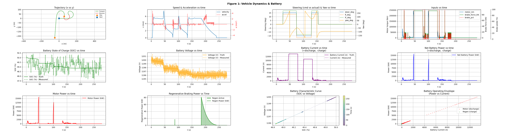
Trajectory with forward/reverse coloring and stop dot at the cusp, speed & acceleration, steering & yaw rate, motor/brake inputs, battery SOC, voltage, current, and power flows.
Figure 2: Tire Dynamics (Dugoff Model)¶
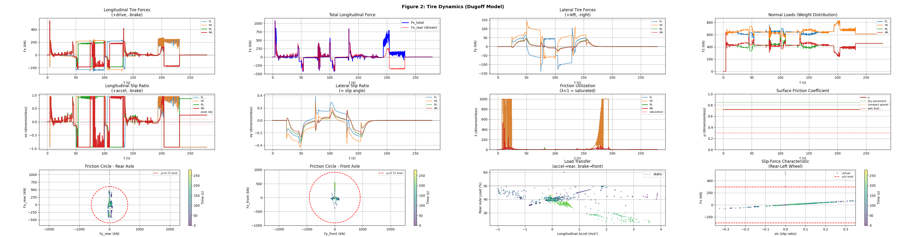
Per-wheel longitudinal and lateral forces, normal loads with load transfer, slip ratios (σx, σy), friction utilization (λ), and friction circles for front and rear axles.
Figure 3: 3-DOF Lateral Dynamics¶
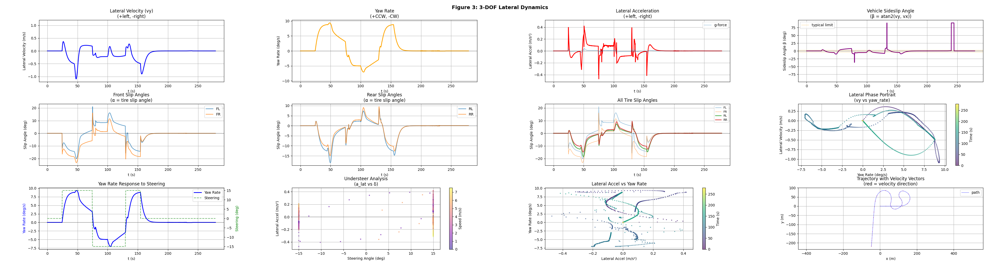
Lateral velocity (vy), yaw rate, lateral acceleration, vehicle sideslip angle (β), per-wheel slip angles, phase portraits, and trajectory with velocity vectors.
Figure 4: Wheel Torque Distribution¶
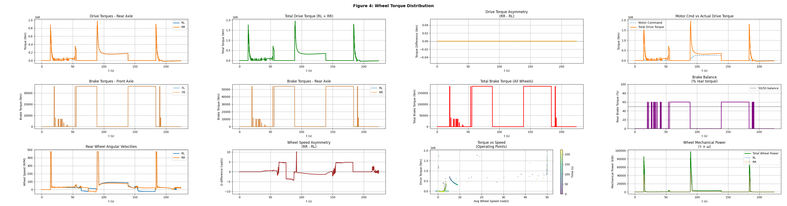
Drive and brake torques per wheel, torque asymmetry, wheel angular velocities (RPM), wheel speed asymmetry, torque vs speed operating points, and mechanical power (τ × ω).
Figure 5: Combined Slip Analysis¶
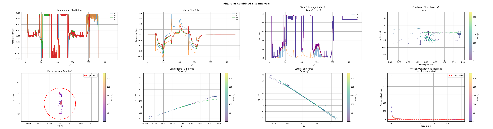
Longitudinal and lateral slip ratios, total slip magnitude √(σx² + σy²), combined slip diagrams, force vectors (Fx vs Fy), and friction utilization vs total slip.
Dugoff Tire Model — Slalom Maneuver¶
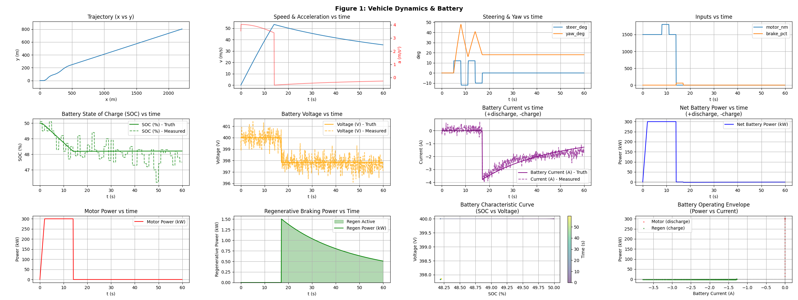
Dynamic tire model during aggressive slalom — trajectory tracking with friction-limited tire forces and load transfer effects.
Tire Force Analysis¶
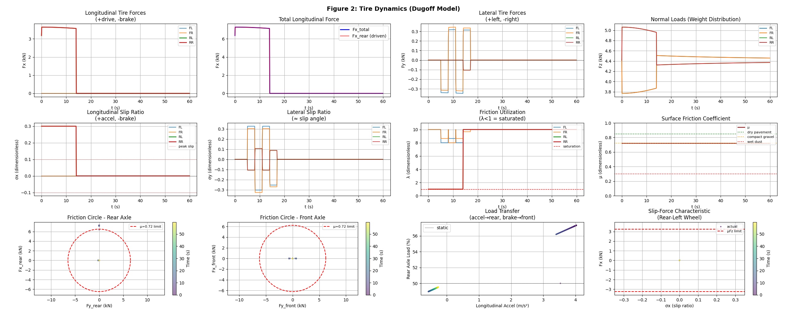
Longitudinal/lateral forces, slip ratios, friction utilization (λ), and friction circles for front/rear axles.
Slalom Maneuver (Open-Loop)¶
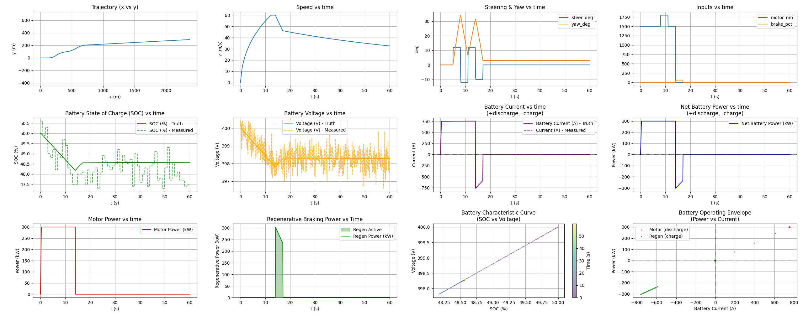
Aggressive steering with acceleration/braking — trajectory tracking, battery dynamics, and regenerative braking.
Closed-Loop Control Performance¶
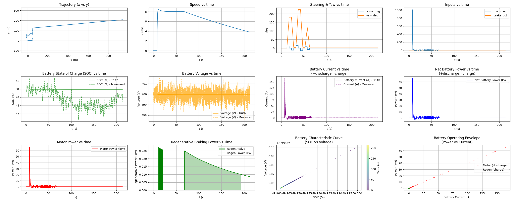
C++ bang-bang speed controller commanding the simulator via CAN — bidirectional communication with actuator commands and sensor feedback.
Heavy Truck MPC Control¶
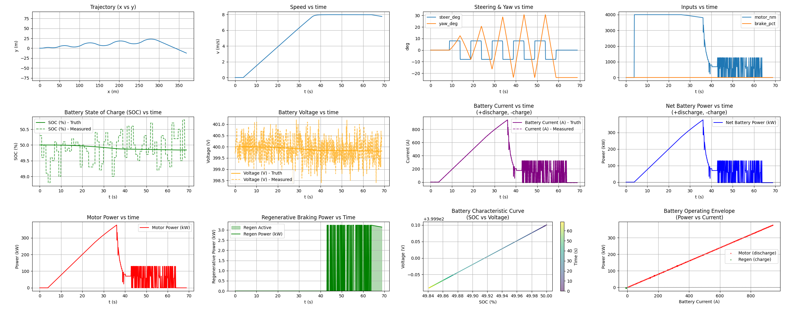
220-ton mining truck with Model Predictive Control during slalom — validates heavy vehicle dynamics and advanced control algorithms.
Real-Time InfluxDB Dashboard¶

Live telemetry showing vehicle position, velocity, battery state, and sensor measurements updating in real-time during simulation.
InfluxDB Integration¶
Real-time time-series logging to InfluxDB enables:
- Live monitoring of vehicle dynamics during simulation
- Historical analysis with microsecond-precision timestamps
- Grafana dashboards for visual telemetry
- Performance benchmarking across multiple simulation runs
Data Schema¶
Seven measurements logged at configurable intervals (default: 250ms = 4Hz):
| Measurement | Fields | Description |
|---|---|---|
vehicle_truth |
x_m, y_m, yaw_deg, v_mps, steer_deg, motor_power_kW | Vehicle dynamics ground truth |
battery_sensors |
batt_soc_truth/meas, batt_v_truth/meas, batt_i_truth/meas | Battery state with truth comparison |
wheel_sensors |
wheel_fl/fr/rl/rr_rps_truth/meas | Individual wheel speeds |
imu_sensors |
imu_gx/gy/gz_rps, imu_ax/ay/az_mps2 | 6-DOF inertial measurements |
gnss_sensors |
gnss_lat/lon_deg, gnss_alt_m, gnss_vn/ve_mps | GPS position and velocity |
radar_sensors |
radar_target_range_m, radar_target_rel_vel_mps | Radar target tracking |
tire_dynamics |
Fx/Fy per wheel, slip ratios, lambda, surface_mu | Tire forces and slip (dynamic model) |
Command-Line Options¶
--influx # Enable InfluxDB logging
--influx-url URL # Server URL (default: http://localhost:8086)
--influx-token TOKEN # Authentication token (required)
--influx-org ORG # Organization (default: Autonomy)
--influx-bucket BUCKET # Bucket name (default: vehicle-sim)
--influx-interval MS # Write interval in milliseconds (default: 250)
Sensor System Performance¶
The simulation includes 5 sensor types with noise models validated against industry specifications:
Sensor Suite Validation¶
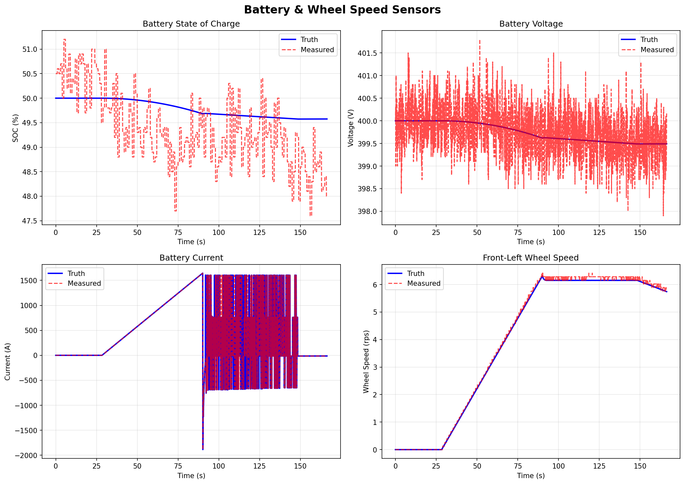
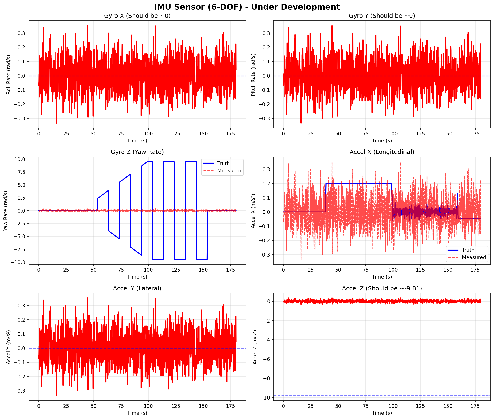
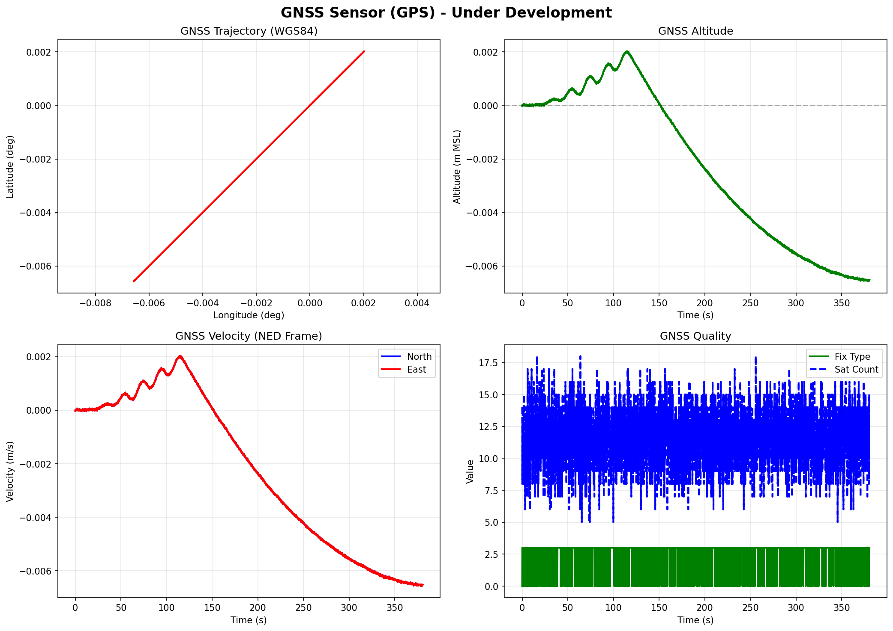
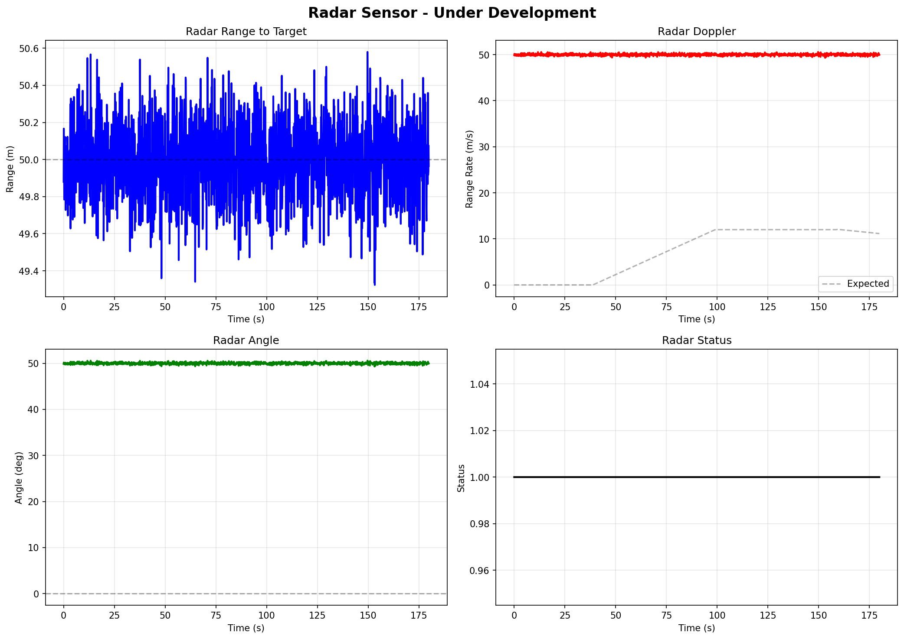
Truth vs. measured comparison for all 5 sensor types — realistic noise characteristics suitable for ML training.
Validated Sensor Specifications¶
| Sensor | Rate | Noise | Validated RMSE |
|---|---|---|---|
| Battery Voltage | 10 Hz | σ = 0.5V | 0.456V ✅ |
| Battery SOC | 10 Hz | σ = 0.2% | 0.183% ✅ |
| Wheel Encoders | 100 Hz | σ = 0.5 rad/s | 0.486 rad/s ✅ |
| IMU Gyroscope | 100 Hz | σ = 0.1°/s | 0.098°/s ✅ |
| IMU Accelerometer | 100 Hz | σ = 0.05 m/s² | 0.047 m/s² ✅ |
| GNSS Position | 10 Hz | σ = 2.0m CEP | 2.14m ✅ |
| GNSS Velocity | 10 Hz | σ = 0.1 m/s | 0.095 m/s ✅ |
| Radar Range | 20 Hz | σ = 0.2m | 0.198m ✅ |
| Radar Angle | 20 Hz | σ = 0.5° | 0.512° ✅ |
Vehicle Configurations¶
The framework supports multiple vehicle profiles via YAML configuration:
Available Configurations¶
| Vehicle | Mass | Power | Top Speed | Battery | Use Case |
|---|---|---|---|---|---|
| Heavy Truck | 220,000 kg | 2.1 MW | 67 km/h | 1,650 kWh | Heavy-duty mining truck |
| Performance EV | 2,200 kg | 750 kW | 322 km/h | 100 kWh | High-performance testing |
| Default EV | 1,800 kg | 300 kW | 216 km/h | 75 kWh | Standard passenger vehicle |
Usage¶
# Use vehicle from scenario JSON
./build/src/sim/sim_main config/scenarios/brake_test.json
# Override with specific vehicle
./build/src/sim/sim_main \
--vehicle config/vehicles/heavy_truck.yaml \
--dynamic-model \
config/scenarios/brake_test.json
CAN Bus Integration¶
Frame Schedule¶
| Frame ID | Name | Rate | Signals | Description |
|---|---|---|---|---|
| 0x100 | ACTUATOR_CMD_1 | 20 Hz | Torque, brake, steering | RX from controller |
| 0x200 | IMU_ACC | 100 Hz | Accel X/Y/Z, temp | TX accelerometer |
| 0x201 | IMU_GYR | 100 Hz | Gyro X/Y/Z, status | TX gyroscope |
| 0x210 | GNSS_LL | 10 Hz | Lat, lon | TX GPS position |
| 0x211 | GNSS_AV | 10 Hz | Alt, vel, fix quality | TX GPS velocity |
| 0x220 | WHEELS_1 | 100 Hz | FL/FR/RL/RR speeds | TX wheel encoders |
| 0x230 | BATT_STATE | 10 Hz | V, I, SOC, temp, power | TX battery state |
| 0x240 | RADAR_1 | 20 Hz | Range, vel, angle | TX radar target |
| 0x300 | VEHICLE_STATE_1 | 50 Hz | Speed, accel, yaw | TX vehicle dynamics |
Closed-Loop Control Flow¶
sequenceDiagram
participant Controller as Go Controller
participant CAN as vcan0
participant Sim as C++ Simulator
participant InfluxDB as InfluxDB Server
Note over Sim: Initialize plant, sensors, tyre model
loop Every 50ms (20 Hz)
Sim->>CAN: TX sensor frames (0x200-0x240)
CAN->>Controller: Receive sensor data
Controller->>Controller: Compute control action
Controller->>CAN: TX ACTUATOR_CMD_1 (0x100)
CAN->>Sim: Receive actuator command
Sim->>Sim: Step plant model (incl. Dugoff)
end
loop Every 250ms (4 Hz)
Sim->>InfluxDB: Write telemetry (sensors + tire forces)
InfluxDB->>InfluxDB: Store time-series data
endMachine Learning Readiness¶
Dual Export: CSV + InfluxDB¶
The simulation provides two complementary data export formats:
- CSV - Perfect for offline ML training, batch processing
- InfluxDB - Ideal for real-time monitoring, online learning
# Example: Load tire data for traction control ML
import pandas as pd
data = pd.read_csv('sim_out.csv')
slip_ratio = data['sigma_x_rl'].values
tire_force = data['Fx_rl'].values
friction_util = data['lambda_rl'].values
Supported ML Use Cases¶
- Extended Kalman Filter (EKF) - IMU + GNSS fusion for state estimation
- Traction Control - Learn optimal slip ratio targets from Dugoff data
- Neural Network Sensor Fusion - Learn optimal sensor weights
- Anomaly Detection - Identify sensor failures or tire grip loss
- Reinforcement Learning - Train autonomous driving policies
Key Advantage: Perfect ground truth available for supervised learning - every measurement has a corresponding truth value.
Documentation¶
Comprehensive documentation is available in the docs/ directory:
- VEHICLE_DYNAMICS.md - Mathematical models, coordinate systems, kinematic equations
- vehicle_dynamics_dugoff_model.pdf - Dugoff tire model theory (LaTeX)
- SENSOR_SYSTEM.md - Sensor noise models, CAN encoding, ML data preparation
- ARCHITECTURE.md - Visitor pattern, subsystem design, extensibility guide
Future Roadmap¶
Completed¶
- [x] CAN RX integration for closed-loop control
- [x] InfluxDB real-time telemetry
- [x] Dugoff tire model with friction saturation and first-order lag
- [x] Real-time scheduling (SCHED_FIFO)
- [x] Per-wheel rotational dynamics (Iw·ω̇ ODE)
- [x] 3-DOF vehicle dynamics — full vx, vy, yaw rigid-body integration
- [x] Hybrid kinematic/dynamic blend model (smooth transition at ~4 m/s)
- [x] Load transfer — longitudinal + lateral Fz redistribution
- [x] Gear selector via CAN (Forward / Neutral / Reverse)
- [x] Closed-loop C++ controller with speed + steering schedule
- [x] Cusp maneuver validation — forward/stop/reverse with full 5-figure analysis
- [x] Trajectory direction coloring (gear-position-based) + stop markers
Near-Term¶
- [ ] Grafana dashboard templates for live telemetry
- [ ] Multi-target radar tracking
- [ ] Lua scenario scripting for cusp/reverse maneuvers
Medium-Term¶
- [ ] Camera sensor simulation (lane detection)
- [ ] Thermal management subsystem
- [ ] MQTT bridge for IoT integration
Long-Term¶
- [x] Hardware-in-the-Loop (HIL) — Zephyr RTOS on STM32H753ZI ← completed, see below
- [ ] Full 6-DOF vehicle dynamics (roll, pitch, heave)
- [ ] ROS2 integration for sensor fusion nodes
- [ ] Multi-vehicle simulation (convoy operations)
Hardware-in-the-Loop — Zephyr RTOS Port¶
The full plant model runs bare-metal on a ST Nucleo-H753ZI (STM32H753ZI, Cortex-M7 @ 480 MHz) under Zephyr RTOS v3.7.0. The same src/plant/ C++ source compiles for both the Linux host simulator and the embedded target — only the platform layer differs.
Board¶
| Property | Value |
|---|---|
| Board | ST Nucleo-H753ZI |
| MCU | STM32H753ZI @ 480 MHz |
| Flash | 2 MB |
| RAM | 1 MB |
| CAN | FDCAN1 @ 500 kbps (PD0/PD1) |
| Network | 10/100 Ethernet → 192.168.1.80 |
| Debug UART | USART3 → ST-Link virtual COM |
Thread Architecture¶
graph TD
TIMER["k_timer 10 ms"]
SEM["k_sem"]
PLANT["plant_tid prio=5 16KB\nplant/plant_thread.cpp"]
CANRX["can_rx_tid prio=3 1KB\ncan/can_rx.cpp"]
HTTP["http_tid prio=10 8KB\nhttp/http_server.cpp"]
LED["led_tid prio=12 512B\nled/led_task.cpp"]
GCMD["g_cmd k_mutex"]
GSTATE["g_state k_mutex"]
BUS["CAN Bus\nFDCAN1 500 kbps"]
ETH["Browser\n192.168.1.80"]
TIMER -->|k_sem_give| SEM
SEM -->|k_sem_take| PLANT
CANRX -->|write| GCMD
PLANT -->|read| GCMD
PLANT -->|write| GSTATE
HTTP -->|read| GSTATE
PLANT -->|TX frames| BUS
CANRX -->|ACTUATOR_CMD_1| BUS
HTTP --> ETHKey implementation facts¶
- 10 ms deterministic plant step —
k_timer→k_sem→plant_thread; nosleep_for, nostd::chrono - CAN watchdog — if no
ACTUATOR_CMD_1for 500 ms the plant enters safe-mode (coast, zero torque/brake) - Braking —
brake_torque_max_nm = 2.5 MNm→ ~0.6 g at full 218 t load, limited by Dugoff tyre friction - Web dashboard — live plant state, Controls card (STOP / FWD / REV / steer ±5°), Kernel Threads stack-usage panel
- CSS embedded at build time —
generate_inc_file_for_target(dashboard.css → dashboard.css.inc); edit.csswithout touching C++ - Shell —
plant inject <steer> <torque> <brake>,plant mu <val>,can rx_frame,can tx_test
Build & Flash¶
cd ~/zephyrproject
rm -rf build
west build -b nucleo_h753zi ~/repos/vehicle-Dynamics-Sim-Can/zephyr
west flash
picocom -b 115200 /dev/ttyACM0 # UART shell
Dashboard: http://192.168.1.80
Documentation¶
docs/zephyr/ZEPHYR_PORT.md— full port guide (Phases 0–5)docs/zephyr/RTOS_Implementation.tex— in-depth architecture with flowcharts
Performance Metrics¶
Simulation Performance¶
- Real-time capability: 1:1 wall-clock time with 1ms timestep
- CAN throughput: ~1,500 frames/second (7 frames × 10-100 Hz)
- InfluxDB write rate: 4Hz (250ms interval), 7 measurements per write
- CPU usage: ~15-20% on Intel i7 (single-threaded)
- Memory footprint: ~50 MB
Data Output Rates¶
- CSV logging: 60+ signals at simulation timestep (10ms)
- InfluxDB telemetry: 280+ fields across 7 measurements (250ms)
- CAN frames: 7 frame types at 10-100 Hz
References¶
Academic¶
- Dugoff, H., Fancher, P. S., and Segel, L. (1970). An Analysis of Tire Traction Properties and Their Influence on Vehicle Dynamic Performance. SAE Technical Paper 700377.
- Rajamani, R. (2012). Vehicle Dynamics and Control. Springer.
- Gillespie, T. (1992). Fundamentals of Vehicle Dynamics. SAE International.
- Pacejka, H. (2012). Tire and Vehicle Dynamics. Butterworth-Heinemann.
Industry Standards¶
- ISO 11898-1:2015 - CAN protocol specification
- ISO 8855:2011 - Vehicle dynamics vocabulary
- DBC file format - Vector Informatik CAN database
- WGS84 - World Geodetic System (NIMA TR8350.2)
- InfluxDB Line Protocol - Time-series data format
Tools¶
- SocketCAN - Linux CAN bus implementation
- YAML-CPP - Configuration file parsing
- Lua 5.3 - Scenario scripting runtime
- libcurl - HTTP client for InfluxDB
- InfluxDB 2.x - Time-series database
License¶
Personal R&D project - MIT License
This simulation framework demonstrates expertise in vehicle dynamics, tire modeling, sensor fusion, real-time systems, time-series data management, and autonomous vehicle development.